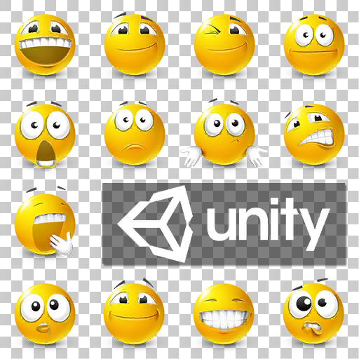

TextMesh Pro 允许通过以下标签在文本中插入精灵： 富文本标签.
要在场景中使用精灵，需要精灵资源。精灵资源由图集纹理创建，每张纹理包含一组精灵。

精灵图集纹理（A sprite atlas texture）
可以使用任意数量的精灵图集和资源。不过，单个文本对象使用多个图集时，会产生多次绘制调用，消耗更多系统资源。通常应尽量让每个对象只使用一个图集。
注意： 精灵是普通位图纹理，因此应确保分辨率足够高，能在目标平台上正确显示。
使用精灵资源（Use sprite assets）
要在项目中使用精灵资源，将其放入一个 Resources/Sprites 文件夹，以便 TextMesh Pro 找到它。
添加或创建精灵资源后，可以选择一个作为项目默认的精灵来源，设置位置为 TextMesh Pro 设置（TextMesh Pro Settings）.
也可为特定文本对象选择精灵资源。编辑 TextMesh Pro 3D 或 TextMesh Pro UI 资源，指定与字体搭配使用的精灵资源。
创建精灵资源（Create a sprite asset）
精灵资源由图集纹理创建。虽然精灵资源与源纹理是独立资源，但创建精灵资源后，仍必须将源纹理保留在项目中。
- 选择你想要使用的精灵资源的纹理。
- 在 Inspector 中更改以下 Texture Importer 属性：
- 将 纹理类型（Texture Type） 设为 Sprite（2D 与 UI）（Sprite (2D and UI)）.
- 将 精灵模式（Sprite Mode） 设为 多个（Multiple）.
- 从 Inspector 打开 Sprite Editor，或从菜单选择 Window > 2D > Sprite Editor ，再用它将纹理划分为独立精灵。
- 保持纹理处于选中状态，从菜单选择 Asset > Create > TextMesh Pro > Sprite Asset ，以创建新的精灵资源。
创建精灵资源后，可以将图集纹理的以下属性恢复原值： 纹理类型（Texture Type） 恢复为原始设置。
精灵资源属性（Sprite Asset Properties）
精灵资源属性分为以下组:
- 字体字面信息（Face Info）: 提供某种字体在特定字号下的信息。
- 图集与材质（Atlas & Material）: 提供精灵资源的材质和源纹理引用。
- 后备精灵资源（Fallback Sprite Assets）: 提供后备精灵资源列表。
- 精灵字符表（Sprite Character Table）: 使用此表管理精灵字符的名称、列表位置，并访问字形信息。
- 精灵字形表（Sprite Glyph Table）: 使用此表管理精灵字形相对于包围盒的位置及其缩放因子。
- 全局偏移与缩放（Global Offsets & Scale）: 为资源中的精灵相对于基线的位置提供全局覆盖设置。
字体字面信息（Face Info）
| 属性（Property） | 说明 |
|---|---|
| 点数大小（Point Size） | 指定采样字体时使用的字号，以磅为单位。 |
| 缩放 | 定义字体的相对缩放。 |
| 上升线（Ascent Line） | 标记字体中最高字形的顶部。 |
| 基线（Baseline） | 定义所有字形排列所依据的虚拟线。 |
| 下降线（Descent Line） | 标记字体中下伸部最低的字形的底部。 |
图集与材质（Atlas & Material）
| 属性（Property） | 说明 |
|---|---|
| 精灵图集（Sprite Atlas） | 引用精灵资源的源纹理。 |
| 默认材质（Default Material） | 引用精灵资源用于渲染精灵的材质。 |
后备精灵资源（Fallback Sprite Assets）
TextMesh Pro 在此精灵资源中找不到字形时，会搜索此处指定的后备精灵资源。
| 属性（Property） | 说明 |
|---|---|
| 后备精灵资源列表（Fallback Sprite Asset List） | 管理后备精灵资源。 选择（Select） + 和 - 增加和删除字体插槽。 选择字体旁的圆形图标，通过 Object Picker 选择字体资源。 拖动各字体资源左侧的手柄，调整列表顺序。 |
精灵字符表（Sprite Character Table）
精灵搜索（Sprite Search）
你可以使用 精灵搜索（Sprite Search） 按以下条件搜索精灵列表： ID 或 姓名（Name）.
搜索结果按以下值升序排列： ID.
上一项与下一项（Previous and Next）
较长的精灵列表会分为多页，可以使用 上一页（Previous Page） 和 下一页（Next Page） 按钮。
进行翻页；这些按钮也出现在表格底部。
精灵信息（Sprite information）
使用此精灵列表管理资源中的精灵信息：
选中精灵，使其成为活动项并启用相关控件。
选择（Select） 上移（Up） 或 向下（Down） 在列表中移动精灵向上或下。
输入 ID 到文本字段中，再选择 跳转（Goto） 移动精灵到列表中的位置。
注意： 移动精灵会更新其 ID 以及 ID以及所有前置精灵的相应值。
选择（Select） + 在列表中添加精灵副本。
选择（Select） - 将精灵从列表中删除。
| 设置（Setting） | 说明 |
|---|---|
| Unicode | 精灵字符的 Unicode 值。 |
| 姓名（Name） | 精灵的唯一名称。 可以修改该值，但它在列表中必须唯一。 你可以在 富文本标签 将这个精灵添加到文本中。 |
| 字形 ID（Glyph ID） | 根据精灵在列表中的位置确定的唯一 ID。 你可以在 富文本标签 将这个精灵添加到文本中。 重新排列列表会更新受影响字符的 字形 ID（Glyph ID）。 要重新定义其尺寸，选择 编辑字形（Edit Glyph）. |
| X、 Y、 W、 H (字形矩形（Glyph Rect）) | 在图集纹理中字形的位置。 |
| W、 H、 BX、 BY、 AD (字形度量（Glyph Metrics）) | 字形的宽度、高度、相对于左侧的水平位置、相对于顶部的垂直位置，以及从基线原点沿基线前进的距离。 |
| 缩放 | 更改此缩放因子以调整精灵大小。 |
精灵字形表（Sprite Glyph Table）
精灵搜索（Sprite Search）
你可以使用 精灵搜索（Sprite Search） 按以下条件搜索精灵列表： ID.
搜索结果按以下值升序排列： ID.
上一项与下一项（Previous and Next）
较长的精灵列表会分为多页。要翻页，使用 上一页（Previous Page） 和 下一页（Next Page） 按钮。
进行翻页；这些按钮也出现在表格底部。
字形信息（Glyph information）
使用此字形列表管理资源中的字形信息：
选中字形，使其成为活动项并启用相关控件。
选择（Select） 上移（Up） 或 向下（Down） 在列表中移动字形向上或下。
输入 ID 到文本字段中，再选择 跳转（Goto） 移动字形到列表中的位置。
注意： 移动字形会更新其 ID 以及 ID以及所有前置字形的相应值。
选择（Select） + 在列表中添加字形副本。
选择（Select） - 将字形从列表中删除。
| 设置（Setting） | 说明 |
|---|---|
| X、 Y、 W、 H (字形矩形（Glyph Rect）) | 在图集纹理中字形的位置。 |
| W、 H、 BX、 BY、 AD (字形度量（Glyph Metrics）) | 字形的宽度、高度、相对于左侧的水平位置、相对于顶部的垂直位置，以及从基线原点沿基线前进的距离。 |
| 缩放 | 更改此缩放因子以调整字形大小。 |
| 图集索引（Atlas Index） | 包含这个字形的图集纹理索引。 |
全局偏移与缩放（Global Offsets & Scale）
使用这些设置覆盖资源中所有精灵的以下值：
| 设置（Setting） | 说明 |
|---|---|
| OX 和 OY | 控制精灵的放置位置，以其左上角相对于基线原点的位置定义。 |
| ADV | 指定放置下一个精灵前，沿基线前进的距离。 |
| SF | 更改此缩放因子以调整精灵大小。 |